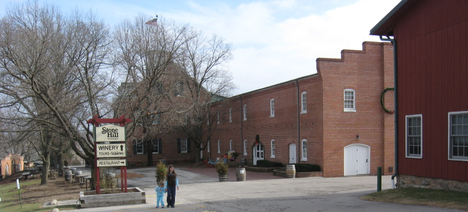

|
North America >
USA >
Missouri >
Stone Hill Winery
Stone Hill Winery
Hermann, MO

|
If you only have time to visit one winery in Missouri wine country this is it. Stone Hill Winery was established in 1847, and was world
reknowned until Prohibition destroyed the Missouri wine industry. The wine cellers were used to grow mushroom, and it was not until 1965 that
the winery began operations again. Stone Hill Winery is located just outside central Hermann, which is not to far south of of I-70 in central
Missouri at the heart of wine country. Their tasting room is perched atop a verdant hill of grapevines, but they are also an event location,
so if you go on a Saturday be prepared. Stone Hill also has tasting rooms in Branson and New Florence.
|
No tasting fee.
www.stonehillwinery.com
Wines:
Chardonel
2003
2007
Reserve Chardonel Missouri 2006
Golden Rhine NV
Golden Spumante NV
Missouri Champagne 2001
Blanc de Blancs Missouri 2003
Seyval 2004
Steinberg White
2004
2006
Traminette
2007
Vidal Blanc
2004
2006
2007
Vignoles
2005
2007
Vinscatto American NV
Concord NV
Hermannsberger 2004
Norton
2003
2004
2005
2006
Steinberg Red 2004
Cream Sherry NV
Port
1991
2003
2005
2006
2007
|
|